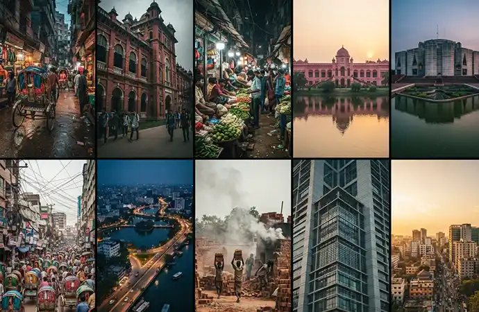
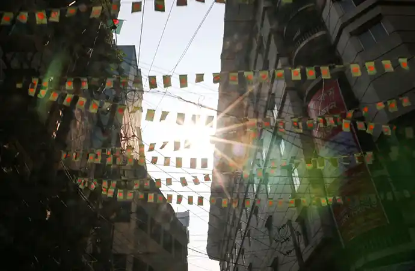
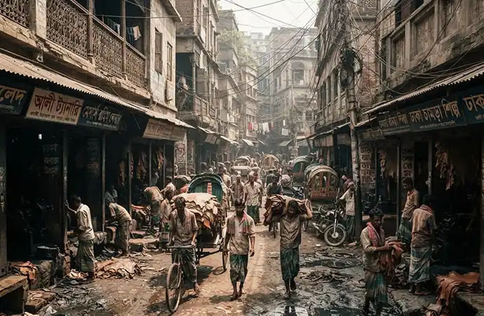
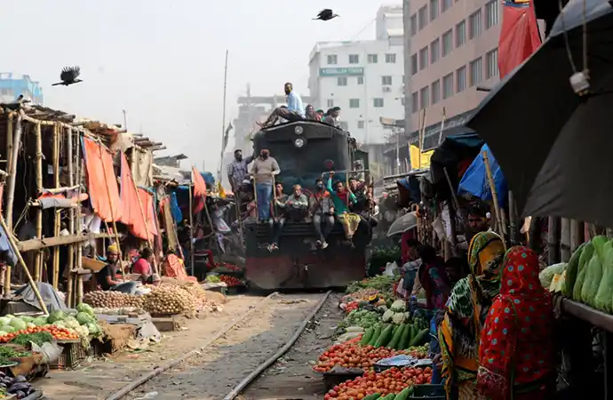
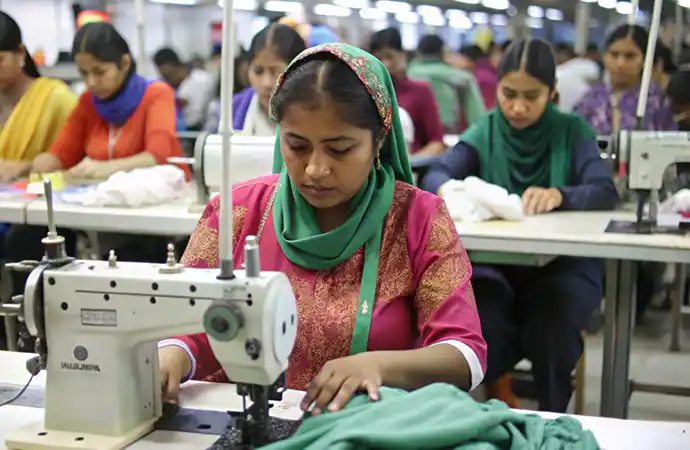
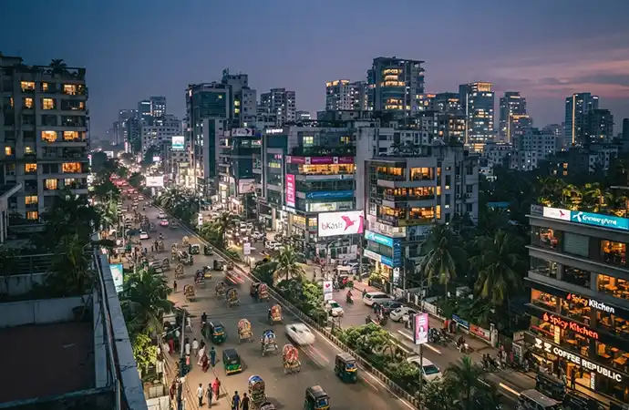
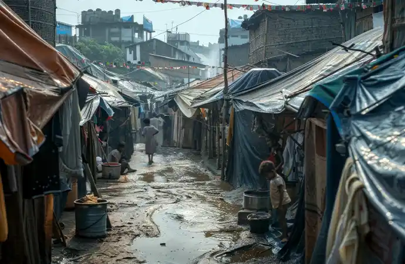

Fantastic team. They took ownership of the project. As a result, they gave very good creative inputs to improve the ad. They also tried hard to reduce the project cost... Read Ehtesham Ahmed's Full ReviewRead More
Top 10 Filming Locations in Dhaka for International Productions (2026)
Dhaka is one of the most cinematically rich and logistically demanding cities in Asia. Home to over 20 million people, the city offers an extraordinary range of visual environments within a compact geography, from Mughal-era heritage lanes and one of the world's busiest river ports to garment factory districts, tanneries, wholesale markets and modern corporate infrastructure. This guide covers the top 10 filming locations in Dhaka for international productions in 2026, with honest information on permits, access requirements, lead times and what each location actually involves for a foreign crew.

Before You Choose a Location: What Every Foreign Crew Needs to Know
Dhaka is not a location you can film freely as a foreign crew. Every significant filming environment in the city requires advance preparation, and most require formal permits, authority coordination or community liaison that cannot be arranged on arrival. The locations in this guide are ranked in order of production value for international documentary, broadcast and commercial crews, not by ease of access.
Standard Filming Permit
10 to 21 working days
Ministry of Information clearance required for all foreign crews filming in Dhaka.
Sensitive Sites
Add 1 to 2 weeks
Government buildings, hospitals, Sadarghat and Hazaribagh require additional district or police clearance.
Journalist Visa
2 to 4 weeks
Pre-clearance required before travel for journalists and news crews entering Bangladesh.
All lead times in this guide are based on productions Libanza Films has directly supported in Dhaka. Plan your location list against these timelines before committing travel dates.
1. Sadarghat River Port
Sadarghat is one of the most visually extraordinary locations in Asia. The largest river port in Bangladesh, it handles hundreds of ferries, launches and country boats daily across the Buriganga River, with passenger vessels up to four decks high loading and unloading alongside wooden cargo boats, fish transport launches and small river taxis. The scale, the density, the light reflecting off the river and the sheer volume of human activity compressed into a single river frontage make Sadarghat irreplaceable for any production covering Bangladesh's river culture, economic life or urban density.
It is also one of the most access-restricted locations in Dhaka for foreign crews. The Bangladesh Inland Water Transport Authority controls the port area, and filming requires specific port authority permission in addition to the standard Ministry of Information permit. Foreign crews arriving at Sadarghat without pre-arranged access and a local fixer will have filming stopped within minutes.
- Best for: Documentaries on river trade, urban density, migration, daily life, climate and flooding narratives
- Best time: Early morning arrivals from 5 am to 8 am when the major overnight ferries dock
- Permit required: Ministry of Information permit plus Bangladesh Inland Water Transport Authority coordination
- Lead time: 3 to 5 weeks
- Fixer essential: Yes, not negotiable for foreign crews
ACCESS RATING
Complex, permit plus port authority coordination required. Allow 3 to 5 weeks minimum.
2. Old Dhaka Heritage Lanes
The lanes of Old Dhaka, concentrated in Shakharibazar, Islampur, Chawkbazar and the areas surrounding the Lalbagh Fort, are among the densest and most visually complex urban environments in South Asia. Streets barely wide enough for two people to pass run between buildings four and five storeys high, packed with metalworkers, food vendors, textile traders, rickshaw pullers and residents whose families have lived in the same buildings for generations.
This is not a controlled or sanitised film set. It is a living, working neighbourhood where a foreign camera crew will attract immediate and sustained attention. Community liaison before filming, a local fixer present throughout and advance notification to the relevant mohalla committee are all essential. Productions that skip this preparation find crowds gathering within minutes, making clean shooting impossible.
- Best for: Street documentaries, heritage films, food and culture content, urban density studies
- Best time: Early morning before 8am for quieter lanes, or mid-morning for peak market activity
- Permit required: Ministry of Information permit plus community and mohalla liaison
- Lead time: 2 to 4 weeks
- Fixer essential: Yes

ACCESS RATING
Moderate, permit plus community liaison. Crowd management is the main operational challenge.
3. Hazaribagh Tannery District
The Hazaribagh tannery district is one of the most visually striking industrial environments in Bangladesh, and one of the most internationally recognised for documentary and photojournalistic content. The leather tanning operations, the dyeing pits, the workers moving through coloured chemical pools, the textures and the smell all combine into a visual and sensory environment that has attracted international documentary crews and photographers for decades.
Filming access requires direct negotiation with individual tannery owners, community liaison with the local association and sensitivity to an environment that has been heavily covered internationally in ways that have not always benefited the local community. A responsible approach to access, consent and community relationship is not just ethically correct here but practically necessary, since poorly handled previous productions have made some tannery owners resistant to outside filming.
- Best for: Labour documentaries, environmental films, industrial visual content, human rights reporting
- Best time: Morning for active dyeing operations with best natural light
- Permit required: Ministry of Information permit plus tannery owner permission and community liaison
- Lead time: 3 to 5 weeks
- Fixer essential: Yes, community relationship is critical

ACCESS RATING
Complex, owner negotiation and community relationship required. Sensitivity to prior coverage essential.
4. Buriganga Riverbank and Keraniganj
The Buriganga River runs along the southern edge of Old Dhaka, and its western bank at Keraniganj is home to one of the largest traditional boat-building industries in Bangladesh. Wooden vessels of all sizes are constructed by hand along the riverbank, with sawmills, carpentry workshops and launch-building yards stretching for kilometres. The river itself, the boat-building activity, the workers and the contrast between the traditional craft and the dense urban backdrop behind it create a visual environment that very few international productions have filmed in depth.
Access is easier than at Sadarghat itself. The Keraniganj bank is less controlled than the main port area, and community liaison with the boat-building associations is more straightforward than port authority coordination. This makes it a strong alternative to Sadarghat for productions with tighter permit timelines.
- Best for: Traditional crafts, river economy, labour documentaries, visual contrast of old and new
- Best time: Morning for active construction with best light on the river
- Permit required: Ministry of Information permit and community liaison
- Lead time: 2 to 3 weeks
- Fixer essential: Yes
ACCESS RATING
Moderate, more accessible than Sadarghat. Good option for productions with tighter timelines.
5. Karwan Bazar Wholesale Market
Karwan Bazar is Dhaka's largest wholesale produce market and one of the most visually active nighttime and early-morning environments in the city. Vegetable and fruit traders, fishmongers, spice sellers and wholesale distributors operate through the night, with peak activity between midnight and 6 am when the market is at full capacity and the lighting conditions, with artificial market lights against the pre-dawn darkness, create exceptional visual material.
Daytime filming in Karwan Bazar is also possible and offers different visual qualities, with the market transitioning from wholesale to retail trade and the surrounding street food culture becoming more prominent. The area is less access-restricted than the heritage zones and river port, making it relatively accessible for foreign crews with standard permit and fixer support.
- Best for: Food culture, urban economy, market life, night cinematography, social documentaries
- Best time: Midnight to 6 am for wholesale activity, daytime for retail and street food
- Permit required: Ministry of Information permit and local police liaison
- Lead time: 2 to 3 weeks
- Fixer essential: Yes

ACCESS RATING
Relatively accessible. Standard permit and fixer support sufficient for most productions.
6. Lalbagh Fort and Mughal Heritage Sites
Lalbagh Fort is a 17th-century Mughal fortress in the heart of Old Dhaka, one of the most significant historical structures in Bangladesh and the most visited heritage site in the city by international visitors. The fort's incomplete construction, its central mosque, the tomb of Bibi Pari and the enclosed gardens provide architectural and historical content that cannot be found anywhere else in Dhaka.
Ahsan Manzil, the Pink Palace on the Buriganga riverfront, is the second major Mughal-era heritage site in Dhaka regularly used by international productions. Its pink exterior, symmetrical facade and riverside position make it one of the most photographed buildings in Bangladesh. Both sites are managed by the Department of Archaeology and require archaeology department filming permission in addition to the standard Ministry of Information permit.
- Best for: Historical documentaries, heritage content, period visual context, cultural films
- Best time: Early morning before general public access begins for cleaner shots
- Permit required: Ministry of Information permit plus Department of Archaeology permission
- Lead time: 3 to 4 weeks
- Fixer essential: Yes
ACCESS RATING
Moderate, archaeology department permission required on top of standard permit. Allow 3 to 4 weeks.
7. Garment Factory Districts
Bangladesh is the world's second-largest garment exporter, and Dhaka's garment factory districts, concentrated in Ashulia, Gazipur and Mirpur, are the production engine of that industry. Factories employing thousands of workers, predominantly women, producing clothing for global retail brands are the defining economic story of modern Bangladesh and a subject of sustained international documentary and journalistic interest.
Access is highly sensitive and requires a careful approach. Factory owners are understandably cautious about international film crews following years of coverage that has focused predominantly on negative narratives around working conditions. Productions approaching this environment with a transparent editorial purpose, proper consent protocols and advance relationship-building through the Bangladesh Garment Manufacturers and Exporters Association or individual factory management are more likely to gain access than those arriving with credentials alone.
- Best for: Economic documentaries, labour and supply chain content, women's empowerment narratives, trade and industry films
- Best time: Shift changes at 8 am and 5 pm for exterior crowd visuals, interior shoots by arrangement with factory management
- Permit required: Ministry of Information permit, factory owner permission and BGMEA coordination for some productions
- Lead time: 4 to 6 weeks for factory interior access
- Fixer essential: Yes, relationship and approach management is critical

ACCESS RATING
Complex, owner negotiation essential. Editorial transparency and consent approach determines access outcome.
8. Dhaka University and Shaheed Minar
Dhaka University is one of the oldest universities in South Asia and the symbolic heart of Bangladesh's intellectual and political history. The campus contains significant colonial-era architecture, tree-lined avenues and open spaces that provide a visual contrast to the density of the rest of Dhaka. The Shaheed Minar, the national monument commemorating the language martyrs of 1952, sits adjacent to the university and is one of the most culturally significant filming locations in Bangladesh.
The university campus is more accessible than many Dhaka locations for foreign crews, though university authority coordination is required for extended filming. The Shaheed Minar as a national monument requires specific permissions and is a sensitive location requiring appropriate handling, particularly around national dates and political contexts.
- Best for: Historical and political documentaries, education content, cultural heritage films, Language Movement narratives
- Best time: Morning on weekdays for campus activity; avoid major national dates unless they are the specific subject
- Permit required: Ministry of Information permit plus university authority coordination
- Lead time: 2 to 3 weeks
- Fixer essential: Yes
ACCESS RATING
Moderate. University coordination required. Shaheed Minar needs sensitive handling and specific permission.
9. Gulshan, Banani and Diplomatic Zone
Gulshan, Banani and the Diplomatic Zone represent modern Dhaka, the city of corporate headquarters, international NGO offices, five-star hotels, upscale restaurants and high-rise development. As a visual environment it provides the essential contrast to Old Dhaka's heritage density, showing the economic transformation Bangladesh has undergone in the past two decades and the stratified nature of Dhaka's urban development.
This zone is where most international production crews base themselves during a Dhaka shoot, and it is the most straightforward filming environment in the city for documentary and commercial work. Exterior street filming is relatively uncomplicated with standard permit coverage. Corporate interior filming requires specific permission from building management and, in some cases, diplomatic zone security coordination.
- Best for: Corporate content, economic development narratives, contrast sequences, commercial productions, NGO and INGO communications content
- Best time: Business hours for corporate activity, evening for restaurant and lifestyle content
- Permit required: Ministry of Information permit, specific building permission for interiors
- Lead time: 2 to 3 weeks
- Fixer essential: Yes for permit, less critical for basic exterior work

ACCESS RATING
Most accessible zone in Dhaka for foreign crews. Standard permit sufficient for most exterior work.
10. Dhaka Slum Communities (Korail, Bauniabadh, Kalshi)
Dhaka's urban slum settlements, including Korail on the Gulshan lake edge, Bauniabadh in Mirpur and Kalshi in the northwest, are home to hundreds of thousands of residents and represent one of the most significant social and urban development stories in South Asia. For NGO communications teams, documentary filmmakers and journalists covering urban poverty, migration, climate displacement and development, these communities are essential filming environments.
Community consent and relationships are the most important access factors here, more important than any formal permit. Productions that enter with a local NGO partner or community liaison person who has existing trust within the settlement gain access that government permits alone cannot provide. Productions that arrive without this relationship will find communities unwilling to participate regardless of the credentials they carry. Libanza Films works with established community liaison contacts in Dhaka's major settlements for productions that need this access.
- Best for: NGO and INGO communications content, urban poverty documentaries, climate displacement narratives, social development films
- Best time: Morning for household and community activity, avoiding midday heat
- Permit required: Ministry of Information permit, local NGO or community liaison essential
- Lead time: 3 to 5 weeks for community relationship establishment
- Fixer essential: Yes, community relationship is the primary access factor

ACCESS RATING
Community relationship is the primary access factor. NGO liaison or established community contact essential.
Dhaka Filming Location Quick Reference
| Location | Best For | Permit Type | Lead Time |
|---|---|---|---|
| Sadarghat River Port | River trade, density, migration | MoI plus BIWTA | 3 to 5 weeks |
| Old Dhaka Lanes | Heritage, street life, culture | MoI plus community | 2 to 4 weeks |
| Hazaribagh Tannery | Labour, environment, industry | MoI plus owner | 3 to 5 weeks |
| Buriganga and Keraniganj | Boat building, river economy | MoI plus community | 2 to 3 weeks |
| Karwan Bazar | Market, food, night filming | MoI plus police | 2 to 3 weeks |
| Lalbagh Fort and Ahsan Manzil | Heritage, history, architecture | MoI plus archaeology | 3 to 4 weeks |
| Garment Factory Districts | Labour, economy, supply chain | MoI plus owner | 4 to 6 weeks |
| Dhaka University and Shaheed Minar | History, education, culture | MoI plus university | 2 to 3 weeks |
| Gulshan, Banani, Diplomatic Zone | Corporate, NGO, commercial | MoI plus building | 2 to 3 weeks |
| Slum Communities | NGO, poverty, development | MoI plus NGO liaison | 3 to 5 weeks |
Drone Filming in Dhaka: What You Need to Know
Drone filming in Dhaka is strictly regulated and most of central Dhaka falls within restricted or yellow zones under Civil Aviation Authority of Bangladesh (CAAB) rules.
- Yellow zone (most of central Dhaka): CAAB permission required, apply 3 to 4 weeks in advance
- Green zone (city periphery and outskirts): Notify CAAB 30 days in advance
- Red zone (airport vicinity, cantonment areas, government buildings): Drone flight prohibited, no exceptions
- Flying without CAAB permission in any zone: Equipment confiscation and potential crew detention
Libanza Films coordinates CAAB drone permit applications as part of standard production support for Dhaka shoots. Drone equipment used on Libanza Films productions includes the DJI Mini 4 Pro for aerial and exterior work and the DJI Avata 2 FPV for interior and immersive sequences.
How to Plan a Multi-Location Dhaka Production
Most international productions filming in Dhaka want to cover more than one location. Planning the sequence of locations and permit applications correctly significantly affects both cost and timeline. Here is how Libanza Films approaches multi-location Dhaka production planning:
- Lead time determines location sequence: Begin permit applications for the longest lead time locations first. If your production includes Sadarghat, garment factories and Lalbagh Fort, all three applications should run simultaneously rather than sequentially.
- Group locations by district: Old Dhaka locations (Sadarghat, Lalbagh Fort, Hazaribagh, Old Dhaka lanes, Buriganga) are geographically compact and can be covered in consecutive shooting days without major logistics moves. Ashulia and Gazipur garment districts are separate day trips from central Dhaka.
- Plan around traffic: Dhaka traffic is severe and unpredictable. Morning shoots across the city require departure from base before 7am to beat the worst congestion. Early morning locations in Old Dhaka have the added benefit of lower crowd density.
- Buffer days are not optional: Every multi-location Dhaka production should have at least one buffer day per three shooting days built into the schedule. Access delays, weather and crowd situations will use these days.
Using Dhaka as a Base for Wider Bangladesh Productions
Most international productions use Dhaka as their entry point and operational base for shoots that extend across Bangladesh. From Dhaka, all major locations are accessible within practical travel distances:
- Cox's Bazar: 45-minute domestic flight or 10 to 12 hours by road. See our Film Fixer in Cox's Bazar page for permit and access detail.
- Sundarbans: 4 to 5 hours by road and ferry to entry points. Forest Department permit required in advance. See our Film Fixer in Sundarbans page.
- Chittagong: 45-minute domestic flight or 5 hours by road. See our Film Fixer in Chittagong page.
- Sylhet: 45-minute domestic flight or 5 to 6 hours by road. See our Film Fixer in Sylhet page.
All multi-location productions are coordinated under a single production support plan. No need to manage separate local contacts for each region.
Frequently Asked Questions, Filming Locations in Dhaka
Yes. All foreign crews filming in Dhaka require a Ministry of Information filming permit, which takes 10 to 21 working days to process. Sensitive locations such as government buildings, hospitals and Sadarghat require additional district or police clearance on top of the standard permit.
The best filming locations in Dhaka for documentary productions are Sadarghat River Port, Old Dhaka lanes, Hazaribagh tannery district, Karwan Bazar wholesale market, Buriganga River, Lalbagh Fort and the garment factory districts. Each offers distinct visual worlds and requires different permit and access arrangements.
No. Sadarghat River Port and Old Dhaka lanes require community liaison, local authority coordination and in most cases police presence for foreign crews. Arriving without local fixer support and pre-arranged access routinely results in filming being stopped and equipment being confiscated.
A standard Ministry of Information filming permit for Dhaka takes 10 to 21 working days. Sensitive sites including government institutions, hospitals and security-adjacent locations require additional district or police clearance, adding 1 to 2 weeks to the timeline.
Drone filming in Dhaka requires Civil Aviation Authority of Bangladesh (CAAB) permission. Most of central Dhaka is a restricted or yellow zone, requiring 3 to 4 weeks advance application. Green zone locations on the city periphery require 30 days advance notice. Flying without CAAB permission is illegal and results in equipment confiscation.
Plan Your Dhaka Production with Libanza Films
Libanza Films provides professional film fixer and production support services for international crews filming in Dhaka. We manage permits, location access, authority coordination, local crew, equipment and full production logistics.
Founded in 2018 by Azizul Hoque Shiplu, who has worked in commercial film production and advertising since 2007, Libanza Films has supported international productions from the USA, UK, Belgium, Romania, Malaysia, Ecuador, Singapore, UAE, France and India.
Related Reading
- Film Fixer in Dhaka, Full Service and Permit Guide
- Film Fixer in Bangladesh, National Hub
- Filming Permits in Bangladesh Explained, Step-by-Step Guide for Foreign Crews
- Filming Costs in Bangladesh, Budget Guide for International Productions (2026)
- International Shoot in Bangladesh, 2026 Filming Guide
- International Production Support in Bangladesh, What Foreign Production Companies Need to Know
- Film Locations in Bangladesh, A Director's Guide for International Productions
Customer Reviews

Very dedicated team! Apprecite their enthusiasm, creativity and passion for their work... Read Md. Jamil Hossain Chowdhury Rahat's Full ReviewRead More

Libanza specializes in creating captivating films and advertisements with compelling narratives and stunning visuals... Read Riad Full ReviewRead More
Get in Touch
Our Clients
Diverse industries, trusted partnerships. From advertising agencies to corporate entities and non-profit organizations, our clients rely on us to bring their creative visions to life. With passion, expertise, and attention to detail, we deliver exceptional video production solutions that exceed expectations. Join our esteemed clientele and experience the power of captivating storytelling with Libanza Films.